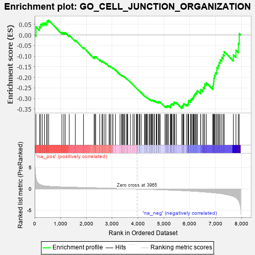
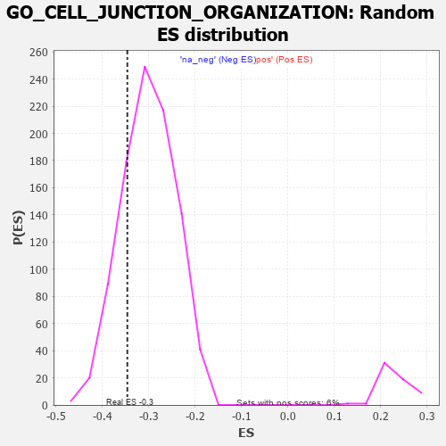

| | | Dataset | 7d |
| Phenotype | NoPhenotypeAvailable |
| Upregulated in class | na_neg |
| GeneSet | GO_CELL_JUNCTION_ORGANIZATION |
| Enrichment Score (ES) | -0.34628212 |
| Normalized Enrichment Score (NES) | -1.151916 |
| Nominal p-value | 0.22257721 |
| FDR q-value | 0.69743484 |
| FWER p-Value | 1.0 |
Table: GSEA Results Summary

Fig 1: Enrichment plot: GO_CELL_JUNCTION_ORGANIZATION
Profile of the Running ES Score & Positions of GeneSet Members on the Rank Ordered List
| PROBE | GENE SYMBOL | GENE_TITLE | RANK IN GENE LIST | RANK METRIC SCORE | RUNNING ES | CORE ENRICHMENT | | 1 | TGFB3 | | | 49 | 2.654 | 0.0385 | No |
| 2 | DNER | | | 188 | 1.098 | 0.0394 | No |
| 3 | KIFC3 | | | 232 | 0.978 | 0.0504 | No |
| 4 | FSCN1 | | | 297 | 0.830 | 0.0563 | No |
| 5 | MESD | | | 384 | 0.713 | 0.0573 | No |
| 6 | LRP1 | | | 470 | 0.648 | 0.0574 | No |
| 7 | CDC20 | | | 480 | 0.644 | 0.0671 | No |
| 8 | SRF | | | 542 | 0.615 | 0.0697 | No |
| 9 | MEF2C | | | 1054 | 0.473 | 0.0124 | No |
| 10 | SRC | | | 1128 | 0.459 | 0.0109 | No |
| 11 | CRIPT | | | 1185 | 0.449 | 0.0113 | No |
| 12 | TBCD | | | 1338 | 0.422 | -0.0010 | No |
| 13 | FZD1 | | | 1574 | 0.379 | -0.0246 | No |
| 14 | PAK3 | | | 1889 | 0.322 | -0.0592 | No |
| 15 | WASF1 | | | 2303 | 0.259 | -0.1076 | No |
| 16 | REST | | | 2308 | 0.259 | -0.1037 | No |
| 17 | BCAS3 | | | 2352 | 0.253 | -0.1049 | No |
| 18 | MPP5 | | | 2362 | 0.251 | -0.1019 | No |
| 19 | NUMB | | | 2519 | 0.224 | -0.1180 | No |
| 20 | MPP7 | | | 2606 | 0.211 | -0.1254 | No |
| 21 | GNPAT | | | 2629 | 0.208 | -0.1247 | No |
| 22 | DSCAM | | | 2689 | 0.200 | -0.1288 | No |
| 23 | FNTA | | | 2755 | 0.190 | -0.1339 | No |
| 24 | DAPK3 | | | 2880 | 0.169 | -0.1469 | No |
| 25 | ZC4H2 | | | 2907 | 0.164 | -0.1475 | No |
| 26 | RAB17 | | | 2950 | 0.157 | -0.1502 | No |
| 27 | WNT4 | | | 3023 | 0.146 | -0.1569 | No |
| 28 | TLN1 | | | 3030 | 0.145 | -0.1552 | No |
| 29 | MTMR2 | | | 3126 | 0.133 | -0.1651 | No |
| 30 | SMAD3 | | | 3303 | 0.105 | -0.1858 | No |
| 31 | FMN1 | | | 3363 | 0.095 | -0.1917 | No |
| 32 | SMAD7 | | | 3369 | 0.093 | -0.1908 | No |
| 33 | TESK2 | | | 3401 | 0.089 | -0.1932 | No |
| 34 | KIF1A | | | 3415 | 0.088 | -0.1934 | No |
| 35 | PTPRK | | | 3454 | 0.084 | -0.1968 | No |
| 36 | CDK5 | | | 3480 | 0.080 | -0.1987 | No |
| 37 | PIN1 | | | 3543 | 0.069 | -0.2054 | No |
| 38 | PARD3 | | | 3584 | 0.063 | -0.2095 | No |
| 39 | DOK7 | | | 3603 | 0.059 | -0.2108 | No |
| 40 | FLNC | | | 3708 | 0.041 | -0.2234 | No |
| 41 | VMP1 | | | 3803 | 0.027 | -0.2349 | No |
| 42 | XIRP2 | | | 3854 | 0.020 | -0.2409 | No |
| 43 | CCM2 | | | 3933 | 0.005 | -0.2508 | No |
| 44 | GPC6 | | | 3950 | 0.002 | -0.2528 | No |
| 45 | IGF1R | | | 3970 | -0.002 | -0.2552 | No |
| 46 | VPS35 | | | 3989 | -0.006 | -0.2574 | No |
| 47 | ACTN1 | | | 4050 | -0.016 | -0.2648 | No |
| 48 | PKN2 | | | 4060 | -0.017 | -0.2657 | No |
| 49 | ROBO2 | | | 4066 | -0.018 | -0.2660 | No |
| 50 | ABL1 | | | 4125 | -0.027 | -0.2730 | No |
| 51 | ARL2 | | | 4254 | -0.050 | -0.2884 | No |
| 52 | WNT11 | | | 4282 | -0.056 | -0.2909 | No |
| 53 | STRN | | | 4307 | -0.060 | -0.2930 | No |
| 54 | OPA1 | | | 4330 | -0.065 | -0.2947 | No |
| 55 | SETD5 | | | 4343 | -0.067 | -0.2951 | No |
| 56 | ARF4 | | | 4383 | -0.073 | -0.2988 | No |
| 57 | LAMC1 | | | 4445 | -0.084 | -0.3052 | No |
| 58 | NDRG1 | | | 4456 | -0.085 | -0.3050 | No |
| 59 | LRRK2 | | | 4467 | -0.087 | -0.3048 | No |
| 60 | ILK | | | 4510 | -0.096 | -0.3086 | No |
| 61 | NPTN | | | 4519 | -0.098 | -0.3079 | No |
| 62 | NTRK2 | | | 4543 | -0.104 | -0.3091 | No |
| 63 | ABI2 | | | 4554 | -0.106 | -0.3086 | No |
| 64 | APC | | | 4558 | -0.107 | -0.3072 | No |
| 65 | DLG5 | | | 4619 | -0.121 | -0.3128 | No |
| 66 | SDK1 | | | 4627 | -0.124 | -0.3116 | No |
| 67 | LMX1A | | | 4631 | -0.124 | -0.3099 | No |
| 68 | ARF6 | | | 4704 | -0.140 | -0.3167 | No |
| 69 | RAP1B | | | 4706 | -0.140 | -0.3145 | No |
| 70 | WASF3 | | | 4730 | -0.145 | -0.3150 | No |
| 71 | MYO5A | | | 4787 | -0.155 | -0.3195 | No |
| 72 | CD151 | | | 4791 | -0.156 | -0.3173 | No |
| 73 | PCLO | | | 4793 | -0.156 | -0.3148 | No |
| 74 | WDR1 | | | 4824 | -0.163 | -0.3158 | No |
| 75 | DLG1 | | | 4860 | -0.169 | -0.3175 | No |
| 76 | PDPK1 | | | 5043 | -0.207 | -0.3372 | No |
| 77 | DRD2 | | | 5088 | -0.221 | -0.3391 | No |
| 78 | ITSN1 | | | 5094 | -0.222 | -0.3360 | No |
| 79 | RER1 | | | 5139 | -0.235 | -0.3376 | No |
| 80 | FLCN | | | 5140 | -0.235 | -0.3337 | No |
| 81 | HDAC6 | | | 5183 | -0.244 | -0.3349 | No |
| 82 | SSH1 | | | 5254 | -0.258 | -0.3395 | No |
| 83 | PTEN | | | 5262 | -0.261 | -0.3360 | No |
| 84 | PICK1 | | | 5265 | -0.263 | -0.3318 | No |
| 85 | EPHA4 | | | 5273 | -0.265 | -0.3282 | No |
| 86 | MAGI2 | | | 5295 | -0.269 | -0.3263 | No |
| 87 | CD9 | | | 5319 | -0.277 | -0.3246 | No |
| 88 | GRIN1 | | | 5381 | -0.291 | -0.3275 | No |
| 89 | FZD5 | | | 5386 | -0.292 | -0.3231 | No |
| 90 | DLG4 | | | 5388 | -0.293 | -0.3182 | No |
| 91 | MDGA1 | | | 5424 | -0.301 | -0.3176 | No |
| 92 | ACTN3 | | | 5486 | -0.315 | -0.3201 | No |
| 93 | LRRC4 | | | 5692 | -0.371 | -0.3400 | Yes |
| 94 | LRFN4 | | | 5733 | -0.387 | -0.3386 | Yes |
| 95 | SLIT1 | | | 5735 | -0.387 | -0.3322 | Yes |
| 96 | TLR2 | | | 5761 | -0.395 | -0.3287 | Yes |
| 97 | GLRB | | | 5776 | -0.398 | -0.3238 | Yes |
| 98 | RAB13 | | | 5870 | -0.425 | -0.3285 | Yes |
| 99 | LRFN1 | | | 5926 | -0.443 | -0.3280 | Yes |
| 100 | LDB1 | | | 5944 | -0.451 | -0.3226 | Yes |
| 101 | DCTN1 | | | 5950 | -0.454 | -0.3156 | Yes |
| 102 | ACTN2 | | | 5960 | -0.458 | -0.3090 | Yes |
| 103 | RAC1 | | | 6036 | -0.484 | -0.3104 | Yes |
| 104 | ADD2 | | | 6046 | -0.487 | -0.3033 | Yes |
| 105 | DBNL | | | 6084 | -0.501 | -0.2996 | Yes |
| 106 | DLG2 | | | 6126 | -0.513 | -0.2962 | Yes |
| 107 | ROCK1 | | | 6152 | -0.520 | -0.2906 | Yes |
| 108 | GRID2 | | | 6170 | -0.528 | -0.2839 | Yes |
| 109 | INSR | | | 6204 | -0.538 | -0.2790 | Yes |
| 110 | CDC42 | | | 6236 | -0.548 | -0.2737 | Yes |
| 111 | FLOT1 | | | 6276 | -0.564 | -0.2692 | Yes |
| 112 | TLN2 | | | 6297 | -0.574 | -0.2620 | Yes |
| 113 | PTPRD | | | 6423 | -0.629 | -0.2674 | Yes |
| 114 | CSK | | | 6428 | -0.630 | -0.2572 | Yes |
| 115 | TRPV4 | | | 6515 | -0.668 | -0.2569 | Yes |
| 116 | ACE | | | 6526 | -0.674 | -0.2469 | Yes |
| 117 | CLN3 | | | 6580 | -0.699 | -0.2418 | Yes |
| 118 | ARF1 | | | 6583 | -0.701 | -0.2302 | Yes |
| 119 | PTPRS | | | 6646 | -0.738 | -0.2257 | Yes |
| 120 | PLEC | | | 6892 | -0.864 | -0.2424 | Yes |
| 121 | PTPRF | | | 6908 | -0.872 | -0.2296 | Yes |
| 122 | LRP8 | | | 6931 | -0.889 | -0.2174 | Yes |
| 123 | GHSR | | | 6937 | -0.894 | -0.2030 | Yes |
| 124 | DNM1L | | | 6963 | -0.913 | -0.1908 | Yes |
| 125 | NPHP4 | | | 6991 | -0.931 | -0.1785 | Yes |
| 126 | MYH10 | | | 7048 | -0.966 | -0.1694 | Yes |
| 127 | GRM5 | | | 7053 | -0.969 | -0.1535 | Yes |
| 128 | RYK | | | 7102 | -1.000 | -0.1428 | Yes |
| 129 | WHRN | | | 7139 | -1.025 | -0.1301 | Yes |
| 130 | PTPRJ | | | 7180 | -1.054 | -0.1174 | Yes |
| 131 | FBF1 | | | 7241 | -1.111 | -0.1063 | Yes |
| 132 | ANK2 | | | 7298 | -1.170 | -0.0937 | Yes |
| 133 | NGEF | | | 7335 | -1.209 | -0.0779 | Yes |
| 134 | ANK3 | | | 7690 | -1.740 | -0.0937 | Yes |
| 135 | NPHP1 | | | 7791 | -2.041 | -0.0720 | Yes |
| 136 | FYN | | | 7881 | -2.622 | -0.0392 | Yes |
| 137 | ASIC2 | | | 7917 | -2.995 | 0.0069 | Yes |
Table: GSEA details [plain text format]

Fig 2: GO_CELL_JUNCTION_ORGANIZATION: Random ES distribution
Gene set null distribution of ES for GO_CELL_JUNCTION_ORGANIZATION